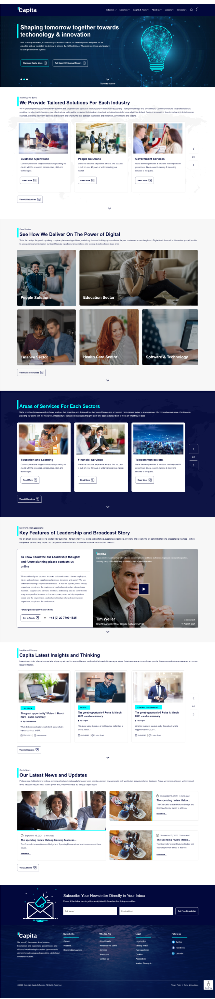
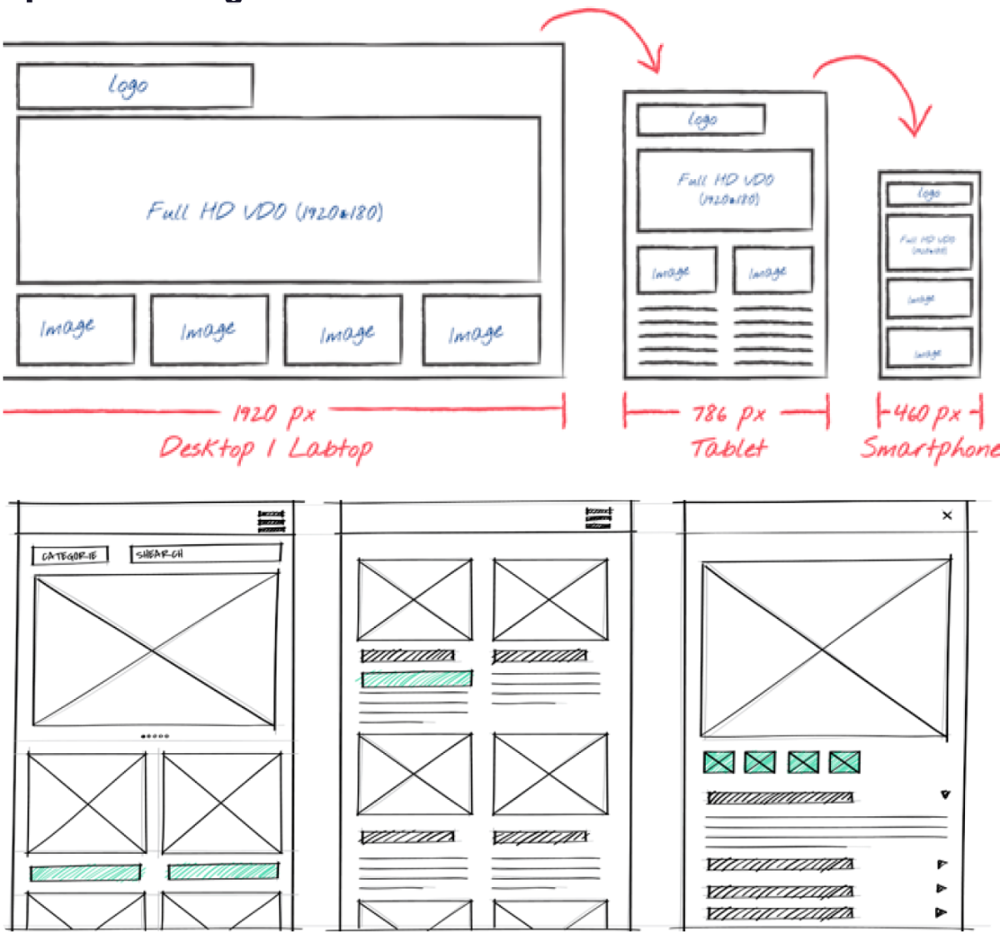
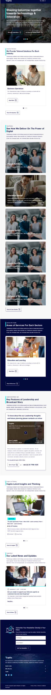

Redesigning Capita.com on Drupal for clients, careers and investors
Capita is a consulting, transformation and digital services business that serves millions of people across governments and businesses. I led the UX/UI redesign of Capita.com during its move to Drupal 10, rebuilding navigation around user problems and creating a responsive, accessible component library.

Redesigned home page: a clear hero, then tailored solutions for each industry. capita.com ↗
Client
Capita plc
My role
Lead UX/UI Designer
Timeline
~5–6 months
Platform
Acquia Drupal 10, Site Studio
Standard
WCAG 2.1 AA · UK GDS
The challenge
Problem statement and pain points
The site had fragmented UI, an outdated technology stack and weak responsiveness, which hurt engagement, SEO and stakeholder satisfaction.
User experience
Navigation complexity: users struggled to find services across 200+ pages
Technical debt: legacy CMS limited design and content updates
Mobile: 60% of traffic on mobile, with a weak responsive design
Technical limitations
Drupal 8 → 10 migration underway, but legacy modules and themes still hurt performance and security
No central governance for UI/UX decisions across Drupal, SEO, content and design
SEO & content
Inconsistent heading tags and anchor-link behaviour
Missing hover states and semantic markup for accessibility and SEO
Responsiveness & accessibility
UI broke on mobile because of oversized spacing and elements
Missing alt text, keyboard navigation and contrast fixes
Goals
Seven goals for the redesign
A modern, accessible site that communicates Capita’s value to clients, candidates and investors, on a CMS editors can update quickly.
Capita.com redesign goals
Improve user experience
Enhance accessibility
Strengthen brand consistency
Optimise SEO & performance
Support stakeholder needs
Scalable content management
Drive digital campaigns
Approach
Solutions to the challenges
Persona-based journeys: journey mapping and usability testing with real users.
Responsive design: responsive frameworks plus automated accessibility testing with AXE and NVDA.
High-fidelity validation: prototypes tested before development.
Drupal 10 migration: standardised modules and themes for performance and security.
Cloud-native architecture: aligned with Capita’s enterprise security principles.
Cross-functional governance: UX, SEO, content and tech decide together.
Agile delivery: sprints with regular stakeholder feedback loops.
Design process
A six-phase delivery timeline
About five to six months, balancing strategy, design, build and stakeholder engagement.
1
Phase 1Discovery
Stakeholder interviews, UX audits and technical assessment.
2
Phase 2Design & prototyping
4–6 weeks of IA, wireframes and high-fidelity prototypes.
3
Phase 3Development & integration
8–12 weeks building on Drupal 10 and Site Studio.
4
Phase 4Content migration & QA
3–4 weeks moving and checking content.
5
Phase 5UAT & stakeholder review
2–3 weeks of acceptance testing and sign-off.
6
Phase 6Launch & post-go-live
2 weeks of launch support and fixes.
Audience
Target audience
Public- and private-sector clients across the UK, Ireland, Germany, Switzerland, India, South Africa, Bulgaria and Poland, plus internal teams and investors.
Existing clients already working with Capita.
Prospective clients exploring outsourcing, digital transformation or CXM.
Industry decision-makers: procurement leads, operations managers, transformation officers.
Internal stakeholders using campaign hubs, service plans and documentation.
Investors and shareholders looking for reports, share price and governance.
Uses Capita.com to manage her pension, usually on a tablet. She likes clear instructions and dislikes frequent password resets.
Needs
Easy login
Clear instructions
Tablet-friendly design
Pain points
Complex login process
Frustration with passcodes
Goals
View benefit statements
Track payments
Contact support
Recommendations
Top priority recommendations
Based on research and design testing; each one has a predicted impact we agreed to track.
Progressive disclosure navigation
Show 5–6 primary services by default; specialist services sit in expandable sections.
Predicted: −75% navigation time
Problem-based IA
Organise by user problems: “Reduce costs”, “Improve CX”, “Scale operations”.
Predicted: −57% find time, −86% errors
Progressive forms
Three essential fields first, then conditional fields based on answers.
Predicted: −40% abandonment
Role-based homepage
A role selector (B2B, careers, investor, news) with tailored content paths.
Predicted: +65% engagement
Problem → solution → proof → action
Every service page follows one clear narrative arc with case studies.
Predicted: +188% form submissions
10 more recommendations
Industry landing pages, structured error messages, homepage hierarchy, quantified results, design system and WCAG AA.
Predicted: +133% total conversions
Ideate
Information architecture
A rebuilt sitemap with problem-based services, industry pages and role-based entry points, plus global search and accessibility tools on every page.
Capita.com
Homepage
Hero banners
Featured services
News slider
About us
Executive committee
Company overview
Policy & legal pages
Industries
Industry solutions
Service templates
Breadcrumb navigation
Services
Problem-based groups
Expandable specialist services
Insights
Thought leadership
Author cards
Tag navigation
News & events
Newsroom
Events
Careers
Workday job listings
Culture & benefits
Contact
Contact forms
Auto-predict fields
Location-based routing
Search
Internal search
Filters & suggestions
Accessibility tools
Recite Me toolbar
Customisable views
Global footer
Sitemap links
Legal notices
Investors
Annual reports
Share price
Sketch
Paper sketching
Quick sketches across desktop, tablet and mobile settled the layout grid and how components stack before anything went into a design tool.

Low-fidelity wireframes
Greyscale wireframes at three breakpoints
After paper sketching, each breakpoint was wireframed in greyscale with the same sections, order and components as the final design: desktop, tablet and mobile. Teams agreed content hierarchy and component behaviour before any brand styling.
Desktop · 1920 px
▌Capita
Industries ▾Expertise ▾Insights & News ▾About us ▾Careers ▾Investors ▾
Shaping tomorrow together towards technology & innovation
Discover Capita More ↗Full Year 2021 Annual Report ↗
Industries We ServeWe Provide Tailored Solutions For Each Industry
Business OperationsRead More ↗
People SolutionsRead More ↗
Government ServicesRead More ↗
‹›
View All Industries ↗
Case StudiesSee How We Deliver On The Power of Digital
People Solutions
Education Sector
Finance Sector
Health Care Sector
Software & Technology
View All Case Studies ↗
Services We ProvideAreas of Services For Each Sectors
Education and LearningRead More ↗
Financial ServicesRead More ↗
TelecommunicationsRead More ↗
‹›
View All Services ↗
Key Points From LeadershipKey Features of Leadership and Broadcast Story
To know about the our Leadership thoughts and future planning please contact us online
Get in Touch ↗or+44 (0) 20 7799 1525
▶
Insights and ThinkingCapita Latest Insights and Thinking
INSTITUTEThe great opportunity? Pulse 1: March 2021By Capita☐ 20/09/2021 ◷ 5 mins read
DIGITALThe great opportunity? Pulse 1: March 2021By Capita☐ 20/09/2021 ◷ 5 mins read
CENTRAL GOVERNMENTThe great opportunity? Pulse 1: March 2021By Capita☐ 20/09/2021 ◷ 5 mins read
View All Insights ↗
Capita NewsOur Latest News and Updates
September 15, 2021 · 5 mins readThe spending review lifelong learning…Read More
September 15, 2021 · 5 mins readThe spending review lifelong…Read More
View All News ↗
Subscribe Your Newsletter Directly in Your Inbox
Full Name*Email Address*Get Free Newsletter
▌Capita
Quick LinksCareersInvestorsResponsible business
Who We AreAbout CapitaIndustries We ServeServicesNewsroom
Shaping tomorrow together towards technology & innovationDiscover Capita More ↗Full Year 2021 Annual Report ↗
Industries We ServeWe Provide Tailored Solutions For Each Industry
Business OperationsRead More ↗
View All Industries ↗
Case StudiesSee How We Deliver On The Power of Digital
People Solutions
Education Sector
Finance Sector
Health Care Sector
Software & Technology
View All Case Studies ↗
Services We ProvideAreas of Services For Each Sectors
Education and LearningRead More ↗
View All Services ↗
Key Points From LeadershipKey Features of Leadership
To know about the our Leadership thoughts
▶
Get in Touch ↗
Insights and ThinkingCapita Latest Insights
INSTITUTEThe great opportunity? Pulse 1
View All Insights ↗
Subscribe Your NewsletterFull Name*Email Address*Get Free Newsletter▌Capita
Quick Links›
Who We Are›
Legal›
Mobile · 460 px
▌Capita
We believe to simplify the links between businesses & customersDiscover Capita More ↗Full Year 2021 Annual Report ↗
Industries We ServeWe Provide Tailored Solutions For Each Industry
Business OperationsRead More ↗
View All Industries ↗
Case StudiesSee How We Deliver On The Power of Digital
People Solutions
Education Sector
Finance Sector
Health Care Sector
Software & Technology
View All Case Studies ↗
Services We ProvideAreas of Services For Each Sectors
Education and LearningRead More ↗
View All Services ↗
Key Points From LeadershipKey Features of Leadership
To know about the our Leadership thoughts
▶
Get in Touch ↗
Insights and ThinkingCapita Latest Insights
INSTITUTEThe great opportunity? Pulse 1
View All Insights ↗
Subscribe Your NewsletterFull Name*Email Address*Get Free Newsletter▌Capita
Quick Links›
Who We Are›
Legal›
Design
High-fidelity screens
Capita navy and cyan, bold section labels, image-led case studies and a newsletter band, built as reusable Site Studio components across every breakpoint.
DesktopTablet

Mobile
Rationale
Design rationale and decisions
Four decisions that shaped the redesign, each backed by research.
Problem-based vs feature-based navigation
Challenge: Service names like “Customer Experience Management” didn’t match how users talk (“How do we reduce costs?”).
Evidence: 65% grouped by problem; 58% confused by current names.
Decision: Renamed navigation in user language, e.g. “Improve customer experience”.